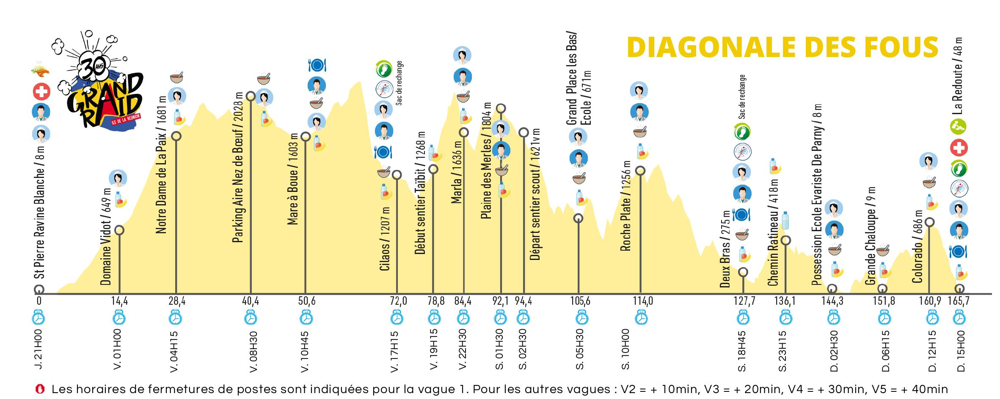
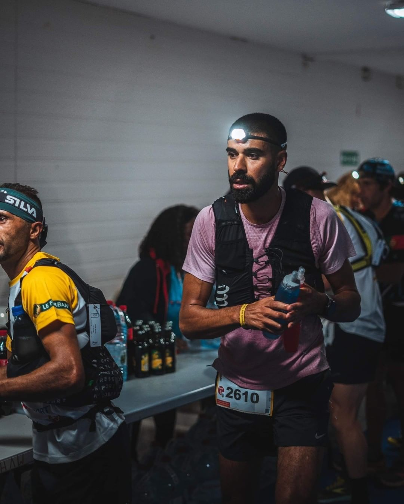
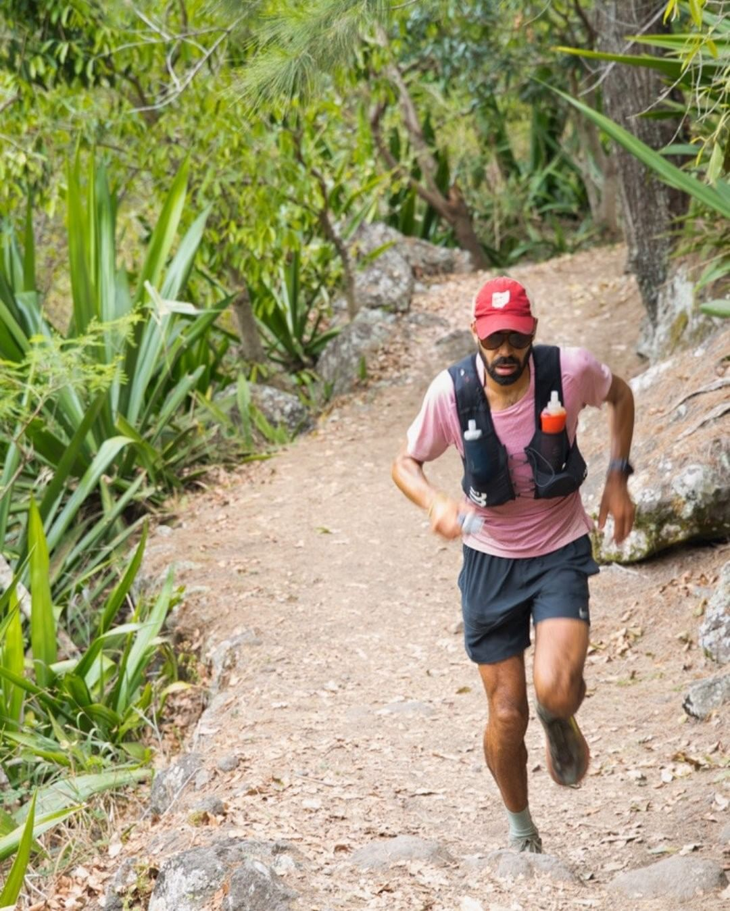
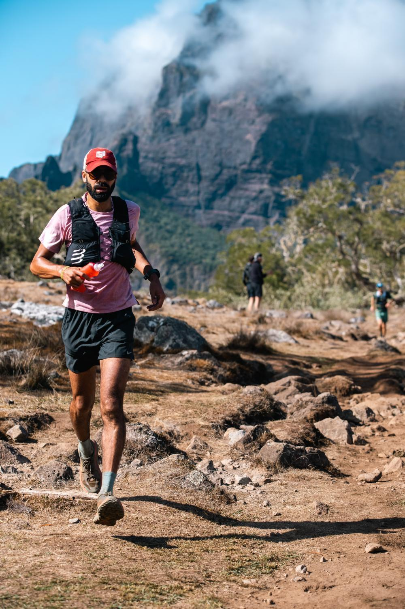
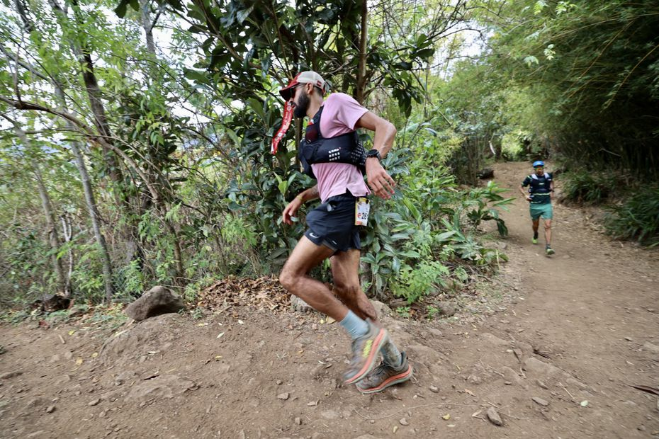
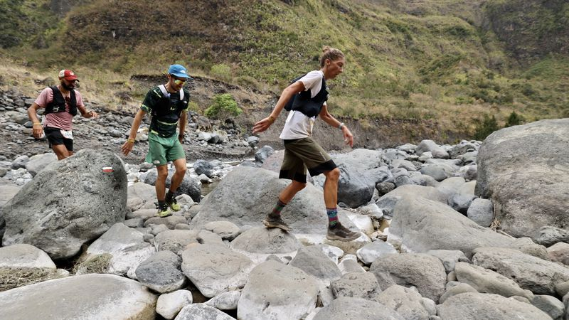
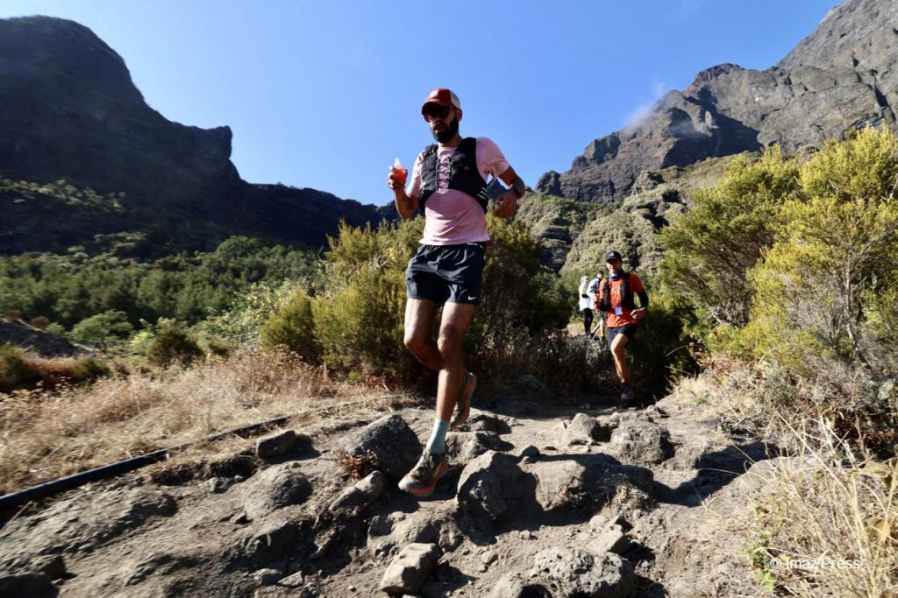
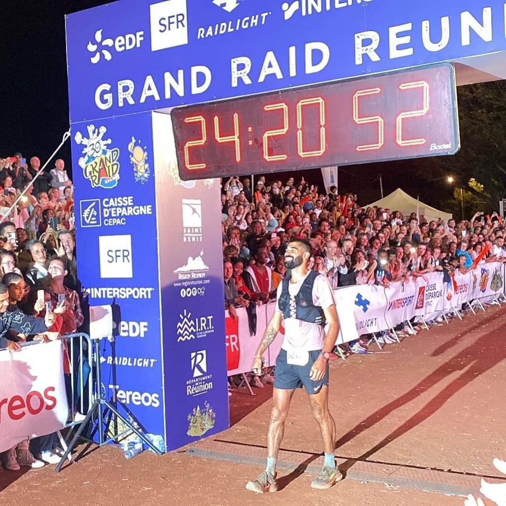

Keep it close to the bone, within the confines of the moment because the Diagonale des Fous is long. 100 miles of staggering difficulty, it was the year's biggest test and on my mind since my lukewarm finish in 2018.
The course this year was officially 164km with 10200m d+ across the French island of Reunion
Objective #1: Brave the night / Weather the attrition
We left the blaze and boom of Saint Pierre at an easy, albeit overadrenalized pace and soon were forking the humid night
with our torches. I had no crew until Cilaos (8-9 hours of racing) so carried an ample supply of gels and drink mix with
the plan to supplement with whatever looked good at the aid stations. After 4.5 hours I was with the lead pack who took
a wrong turn and did a loop to add about 15min to our time.Sure I was pissed and disappointed to lose time, but also felt a fresh sense of urgency. Leaning into negativity during an ultra is a dangerous game, soon the swollen river is a torrent and you are swept away. This little blip contributed to the elite field being cut in half as people folded.

Photo credits: Anthony DeroeuxOut of Mare à Boue (52km) I got passed by Courtney Dauwalter, one of the best in the sport, renown whose notoriety for eviscerating competition both male and female is renown. I stuck to and we navigated the treacherous 'chutes and ladders' section together. Think mist-slicked obstacle course of boulders threaded with the occasional ladder tending uphill but plugged with gnarly watch-your-ass divots. She said her goal was to “not get injured on the descents." Prudence over performance. First you survive and then you fight. Je suis d'accord, Courtney.
The 1200m decent into Cilaos (74km) was mildly torturous, but I arrived just after dawn, intact and in good spirits. My wife, son and father-in-law were waiting for me. I ate a can of peaches, fruit compote, a ham/cheese wrap, several cups of Arizona tea and set off just behind Courtney whose efficiency in and out of aid stations put me to shame.

Objective #2: Mission Mafate / Allez Avance!
Courtney and I cut up Col du Taibit in good time, passing Maxime Cazajous, a powerful runner hailing from my neck of the woods in
the Pyrenees, and Germain Grangier (aka Serge), another Frenchman with a pile of outstanding results in big races. What a privilege
it was to run among such great athletes and better yet be smashing one of the biggest climbs of the course. I took the
descent easy, heard a blood curdling scream from behind so stupefying I thought Courtney had been attacked by a
shark. She confirmed she was ok after taking a fall so I rolled into Marla (86km) in third position.

At the ravito I downed two cups of soup, made a Maurten drink, a half-water/coke drink and sucked a couple orange slices. Again I would be without crew for 9hrs+ so was carrying nutrition and sure to fuel and drink every chance I got. This is Mafate. Mistakes can be lethal. The news that the lead duo Beñat Marmisolle and Jean-Philippe Tschumi were 40mins ahead meant a round of applause. We were four runners Maxime, Germain, Courtney and myself, within two minutes of each other but switching positions.
Maxime and I did most of the heavy lifting to Grand Place (107km). Third at the Diag in 2018, Maxime was descending well but starting to look haggard on the climbs and after the ascent from Grand Place we no longer saw him. The only climb where I truly suffered was up to Roche Plate. Serge tells me its 600m positive, I claim that's an impossibility! It never ends. Its hot and steep and mysterious, and also the last bit of a long stretch between aid stations and we were dry. Rather rough, but no death blows were dealt.

Serge and I ran together after Plateau Cerf (115km) and had time to reflect how strong Courtney was, neither felt her performance diminished our effort, we were moving at a respectable pace, this is the Diagonale des Fous, we were doing our job, we were moving forward.
A helicopter chopped deafeningly overhead which meant Courtney had caught us. She was a live wire, we let her pass and followed, “Let's finish this thing!” she cheered with headphones in, pouncing with each step. I looked at my watch, 45km to go.

Another long leap between aid stations saw us down to Deux Bras (130km). 800m of technical ascent to Dos d'Ane was all that guarded liberation from Mafate. I was several minutes slower at the aid station, using my drop-bag to replenish vitals and during the first 10 minutes of the climb I experienced flagging energy and clumsiness. I had the feeling that Courtney and Serge were in their element and the race was slipping away.
I pounded gatorade, took a caffeinated gel and salt pills—rinsed with water and repeated. There was only the mountain, and me to scratch its back. I ran off the top rewarded by supporters telling me I was 1 minute back. I checked my energy, cooling off with the humble tracing of what lay ahead: the technical test of sentier Kalla, Chemin des Anglais and its lava-rock slog, one substantial climb to Colorado and raunchy decent to la Redoute! At least I could see the finish, it was a real thing, but now was no the time for over-exuberance.

Objective #3: Diamond Hands / HOLD FAST
I hit the pavement relieved to be through sentier Kalla, a radio man runs beside with a microphone, “Are you
going to try to recapture third place?” “We'll see, I need energy for that.” I met my family at the aid station in la
Possession (146km), drank pomegranate juice and Arizona tea and ate fruit compote. Taking stock of my body, I realize I'm
fine. The only thing wrong-I'm tired. Tired? What's tired? Come on, I'm tired of tired. I take a coffee, kiss my wife
and follow my friends just two minutes ahead. At this point I decide to bank energy, move efficiently
to Grand Chalupe and from there make a move. Darkness falls. I catch Courtney on the descent, she tells me to go for it.
I'm obliged.
Objective #4: Always Finish Strong
I see Serge at the Chalupe ravito (154km) and we share words of encouragement before I decide to barrel ahead. As soon as the
steep bit is done I start to run. Most of me wants to hike but I say no in thunder (thank you Jim Harrison see poem). I ran nearly every step of the last climb, as if it were one long scroll on
which I scrawled, “I will the will to run. I am here, only here, I will the will to run,” over
and over. The effect was significant and I made a good gap and launched into the descent with the plan to keep pushing.
There were two other races finishing via the same tight, technical path and traffic jams encumbered me.
Crossing the road into the stadium, I lived a fine moment. The thing was done. We'd done the thing well. A day had
passed.

Reflections / Looking Forward
It came as a surprise to many to see me take third place. If you told me beforehand I would do 24h, I'd presume I had a
close to perfect race. Honestly, the race was far from perfect. There were the obvious time-sucks of getting lost and
little assistance, but having seen how Courtney races I believe there is a significant gap between where I'm at and what
is possible. She seemed almost always urgent, ran with intensity and passion, piled on top of her athletic ability is a
thriving in the purgatory of an ultra. The mind drives the legs, her mental game is off the charts.My progression this year has been on a good trajectory. This is the thing I've been trying to do well for so long. With hard work and devotion and drive I've given myself the chance to succeed. But I intend to keep climbing, who knows where the ceiling hangs and how fragile it is.